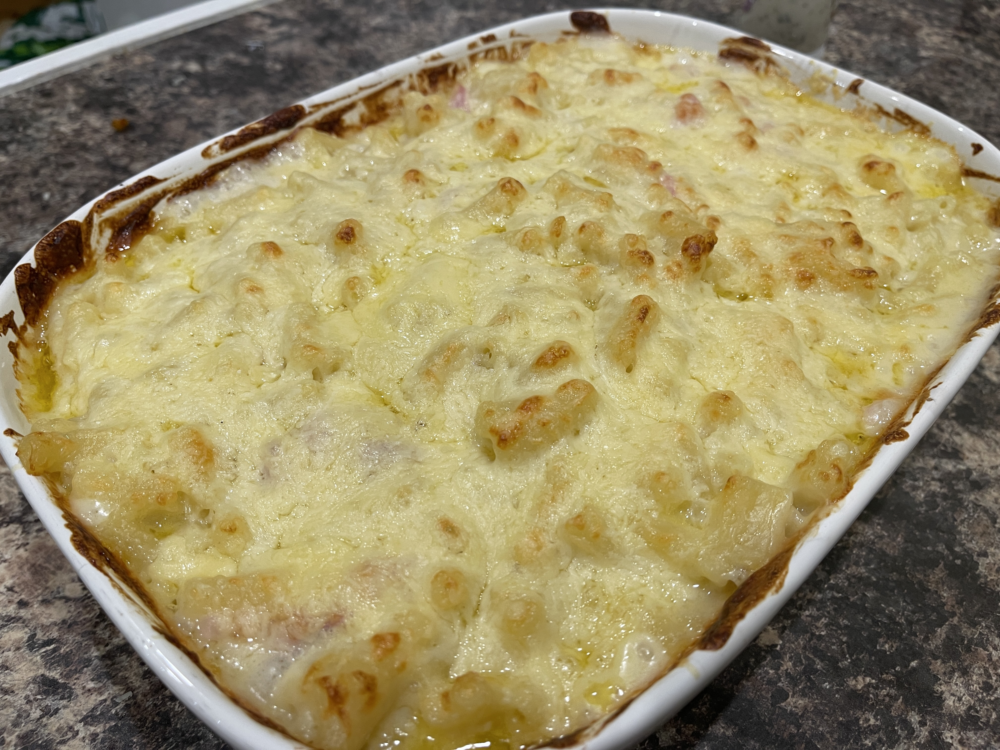

Mac 'n' Cheese with Bacon
Home
Image

Description
A rich, creamy macoroni cheese with bacon.
Ingredients
- 1 lb of Grated Cheese (of your choice)
- 1 lb of dry Macoroni
- 4 strips of bacon, cut into small squares
- 2 oz of flour
- 2 oz of butter
- 400ml of semi-skimmed milk
Steps
- Preheat your oven to around 180 Degrees (C)
- Cook the pasta in hot, salted water. Feel free to rinse the dry pasta before boiling to remove any startch
- Put the bacon in a frying pan and cook until no more water is coming out
- When the pasta is cooked and soft, tip into a colender and set aside
- Put the 2 oz of butter into a sauce pan and stir until completely melted
- Once melted, add in the flour and milk. Stir until it starts to thicken
- Whilst waiting for the sauce to thicken, pour the cooked pasta into a large oven dish
- Add around 3/4 of the grated cheese and stir until the cheese has melted
- When the cheese has melted and the sauce looks smooth (no lumps), put in the bacon pieces and stir in (the heat can be turned off now)
- Pour the cheese sauce over the pasta in the oven dish and mix well
- With the remaining grated cheese, sprinkle it over the top
- Put in the oven for 15-20 minutes (or until golden brown on top)
- Remove from the oven and serve!
Personally, I like to cook garlic ciabatta bread with this! I also like sprinkling over Italian Seasoning and garlic sauce.